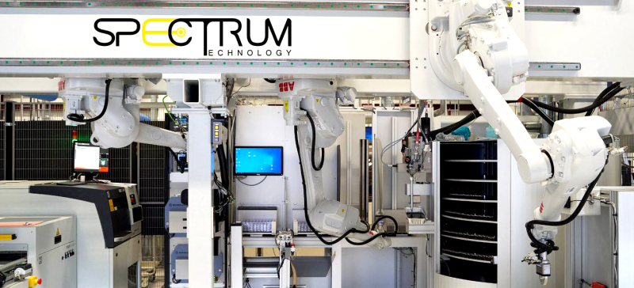
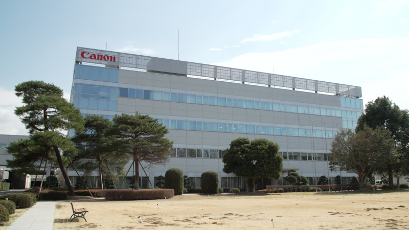
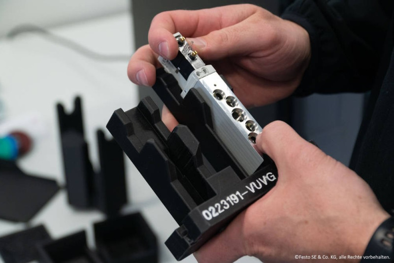
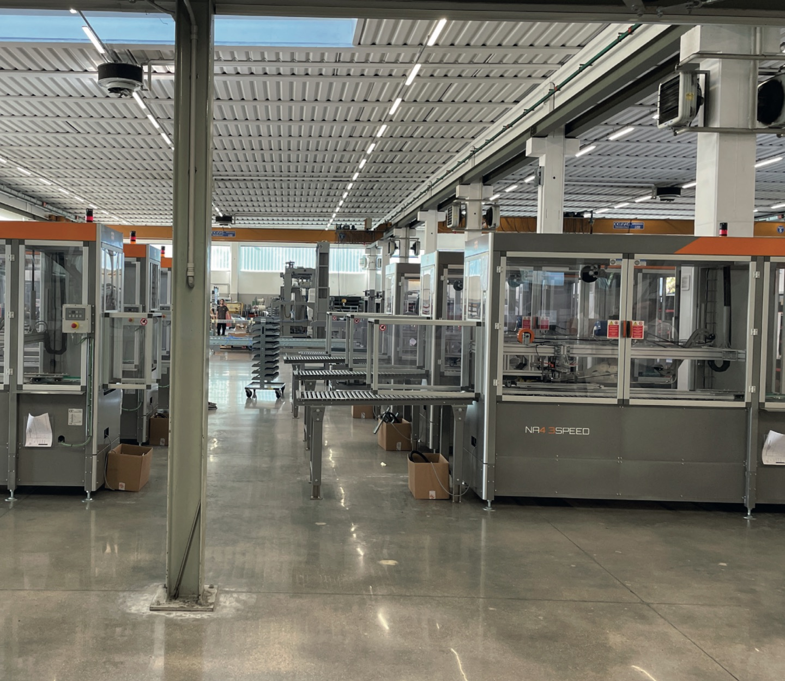
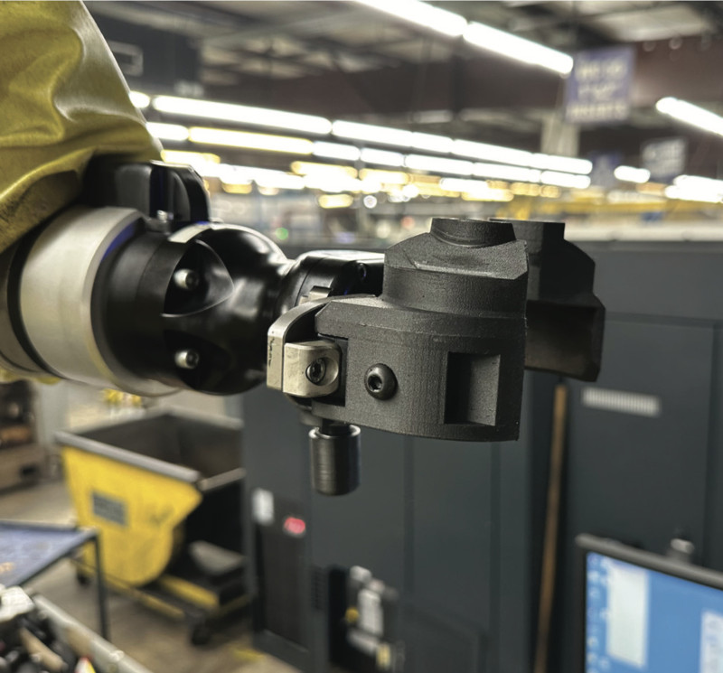
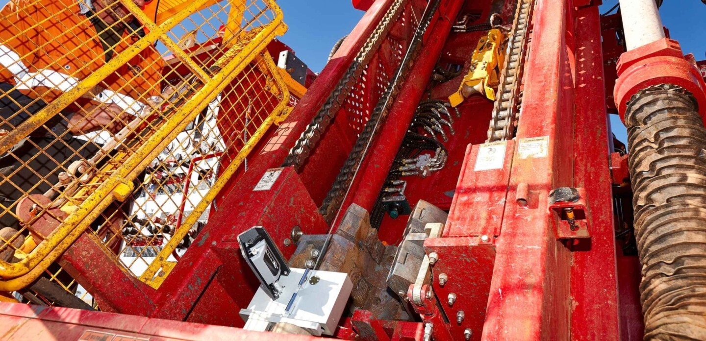
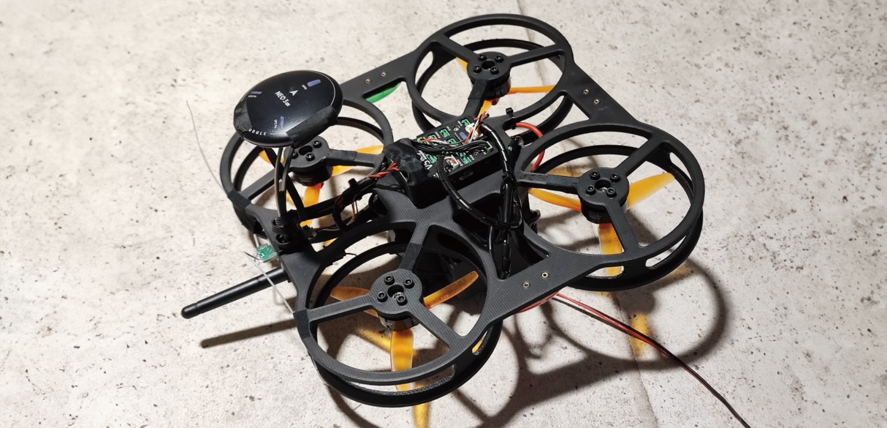
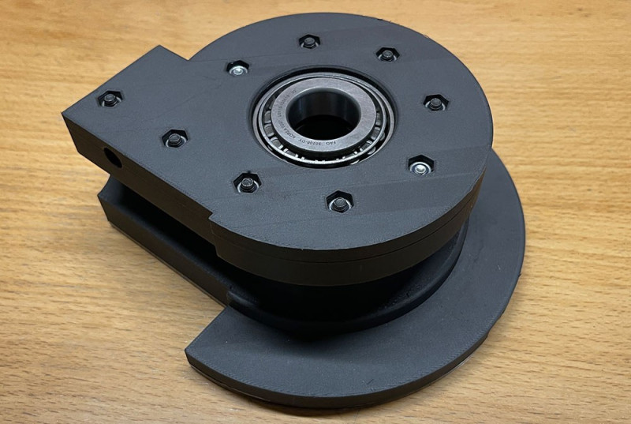
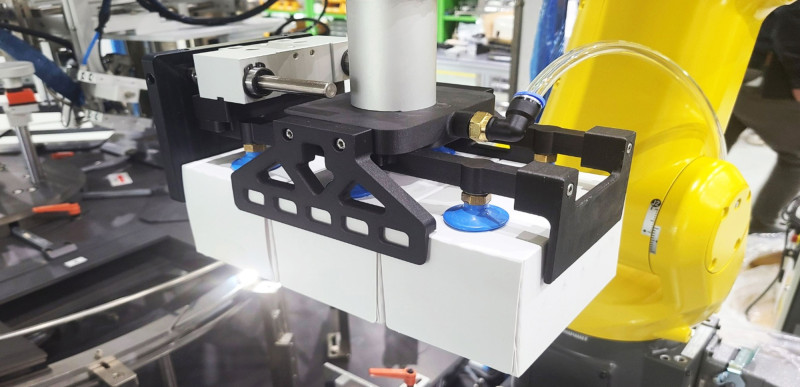
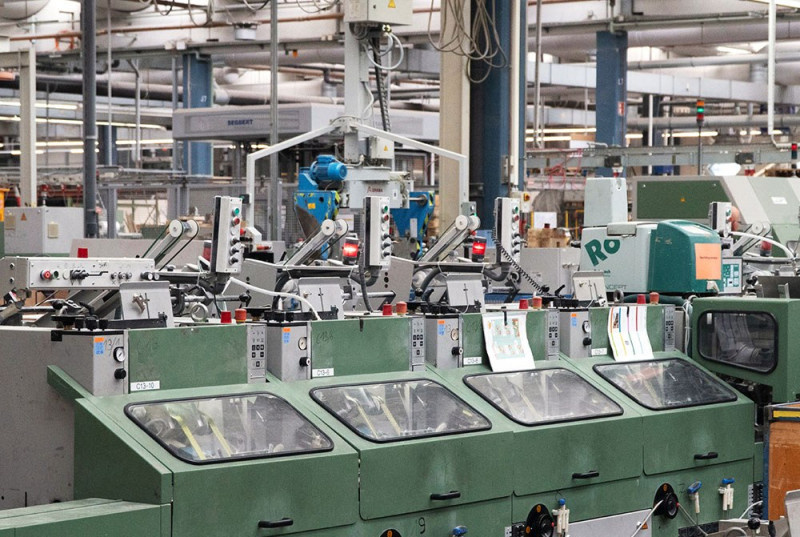

真實客戶成功案例
從精密製造到國防航太，全球企業信賴 Markforged 實現製造轉型——更快速、更低成本、更靠近需求端。
Markforged 全球客戶

Spectrum Technology 由 Jonas Zitek 領導，為要求嚴苛、時程緊迫的客戶設計並建造先進機械。原本為鋁合金設計的零件，重新以 Onyx 複合材料工程化，大幅減輕重量同時保持結構強度，縮短了製造週期。

Canon 超精密產品的製造流程難以自動化，面臨重大挑戰。導入 Markforged 後，Canon 成功自動化複雜工序，並以 3D 列印製作精密治具，顯著提升生產效率。

FESTO 是全球頂尖自動化技術供應商。在 Scharnhausen 技術廠導入 Markforged 3D 列印機後，大幅提升電子元件製造效率，實現了以往難以達成的製造自動化目標。

TMG Impianti 必須在最短時間內提供客製化機械元件。Markforged 幫助他們實現快速客製化零件生產，大幅縮短交期並提升客戶滿意度。

Metal X 讓 Dixie Iron Works 得以生產工業級金屬零件。總裁 Gerard Danos 表示：「3D 金屬列印大幅簡化了複雜且高成本的製程，生產成本顯著降低。」

SQP Engineering 與 Strada 透過 Markforged 大幅提升鑽探作業工具精度。採用 Markforged 材料後，測量工具重量減輕 80%，同時降低了測試成本。

BODUK 是日本無人機框架製造新創。Markforged 的高精度可重現性讓零件能可靠組裝，成功實現從快速原型到正式量產的轉型。

Toivalan Metalli 運用積層製造技術在廠內自製彎折工具原型，大幅縮短工裝製作時間與成本，原本需要外包的工具現在可以快速廠內迭代。

Harvestance 用複合材料 3D 列印技術重新設計機器人夾爪，在提升強度與剛性的同時大幅減輕重量，讓農業採收機器人更加靈活高效。

Vogel Druck 用積層製造為傳統印刷機械自製備用零件，節省大量時間與成本，有效降低停機損失。
查看 Markforged 全球完整案例庫（數百家企業的成功故事）
查看更多全球案例 →